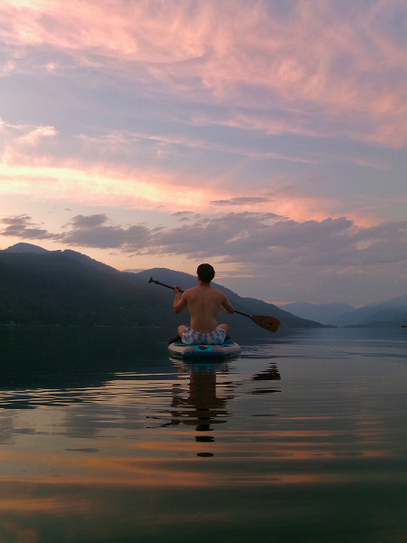
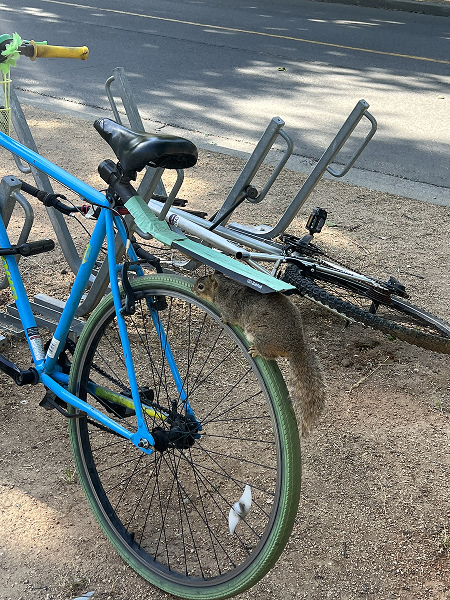
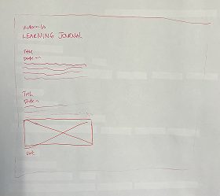

Game Design Researcg
Novemnber 20th, 2025
This article outlines principles to follow in order to design a successful game, Overall, both user experience and engagement should be prioritized. User experience consists of following similar design patterns and clearly communicating the player's objectives or other necessary information to play the game. By following similar design patterns, the learning curve for a game can be signifcantly lower, leading to higher adoption rates. Engagement can also be achieved by making a game just difficult enough so that it is a fun challenge but not impossible to win. Other ways to increase engagement include having cool and high quality graphics and sounds.
Link to original article
Visual Thinking Analysis
October 28th, 2025

This image is a photo taken by Jolina of her boyfriend paddle boarding at a lake during sunset in Grand Forks, Canada. The most interesting aspects of the photo are the warm, vivid colors in the sky, the layered clouds, and the reflection in the water. The fact that he is mid-paddle and not standing on the paddle board adds to the image’s unique quality and sense of stillness.
The most obvious element of the image is its scenic, tranquil setting, while the most mysterious aspects are the questions it raises—where is he going, why isn’t he standing, and how long has he been there?
To push the visual thinking and narrative further, the image could be reimagined as part of a photo gallery wall, where each image flips or transitions between the foreground and background. This approach could add depth, movement, and a sense of storytelling, transforming the photo from a simple documentation into something more visually intriguing.

This image is intriguing because it is a photo of a squirrel on top of a bike wheel nudged in between the wheel and the seat. From this image alone, we would not know how the squirrel got into this space, and whether or not it stayed there for a long time.
This image relates to my topic because the subject is a squirrel, aligning with the overall theme of my collection, which focuses on photographing squirrels in unexpected contexts. My collection reflects that I’m an observant person who pays attention to silly moments in my environment. It shows my lighthearted curiosity and tendency to document the playful side of everyday life on campus in Davis.
To make the images more visually engaging, I could experiment with transparent backgrounds that separate the foreground and background, apply subtle photo filters, incorporate animations, or layer graphics on top of the squirrels to enhance their expressiveness and create a more dynamic narrative.
Visual Thinking Strategies Research
October 28th, 2025
Visual thinking is a highly relevant skill for not only design but also everyday scenarios. It requires critical thinking of the context of a photo, asking yourself what is happening in the frame and what context led you to that conclusion. While reading this article, I found the concept of visual thinking comparable to rhetorical analysis. I think that both of these skills are important for media literacy and recognizing connections that are not always explicit.
Link to original article
Quanta Magazine's website features really interesting visuals that are responsive as the user scrolls through. The colors, typography, and layout work well together visually and the website's unique interactions and animations are engaging and fun. However, a downside of this type of design could be friction in navigation as there is a slight delay as the user scrolls to different sections.
Link to website example
Overlays
October 23rd, 2025
Modals (also referred to as overlays and dialog windows) are a common UI pattern used to grab user's attention or collect input. They often require users to interact with them before returning to the main interface. Originally designed to simplify UI and save screen space, modals are now often overused, leading users to dismiss them. Effective modals should include an escape option (cancel button, close button, escape key, or clicking outside), a descriptive title that matches the triggering action, clear and actionable buttons, appropriately sized (not too big or small) and positioned content, and focused interaction through a lightbox effect. Modals should also be user-initiated rather than intrusive.
Link to original article
Form Design
October 14th, 2025
Design plays an important role in how users interact with forms and influences their likelihood of completing it. Things such as form length, order of questions, clear labelling, and feedback can make or break an experience. When designing a form, it is important to consider how likely users will fill out each section or potentially make a mistake. Some ways to reduce cognitive overload are providing visual feedback, ordering easier questions first, and following established accessibility patterns.
Link to original article

An online form that I've previously interacted with was a survey created on Google Forms. While surveys can vary greatly by who created them, I think that Google Forms follows best practices through its visual design patterns such as clear labelling of required fields and following a one column layout. Google Forms also offers the option to have multiple steps within a form.
Link to a Google Form